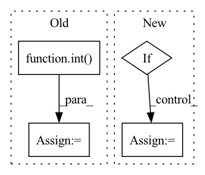

Pattern ID :1930
Before Change
def forward(self, input, hx=None):
output_size = (
int( (input.size(-1) - self.kernel_size + 2 * self.padding_ih) / self.stride) + 1
)
// Handle the case of no hidden state provided
if hx is None:
hx = torch.zeros(input.size(0), self.h_channels, output_size, device=input.device)
// Run the optimized convgru-cell
return _opt_convgrucell_1d(
input,After Change
def forward(self, input, h_prev=None):
// init hidden on forward
if h_prev is None:
h_prev = self.init_hidden(input)
print(f"input: {input.shape} prev: {h_prev.shape}")
combined = torch.cat((input, h_prev), dim=1) // concatenate along channel axis
In pattern: SUPERPATTERN
Frequency: 3
Non-data size: 4
Instances Fragment ID: 13415065
Project Name: openclimatefix/skillful_nowcasting
Commit Name: 02c5ceadd01484d6ac8bce848ff76446fe7a6917
Time: 2021-10-18
Author: jacob@bieker.tech
File Name: nowcasting_gan/layers/ConvGRU.py
M Class Name: ConvGRU1DCell
N Class Name: ConvGRUCell
M Method Name: forward(3)
N Method Name: forward(3)
M Parent Class: nn.Module
N Parent Class: nn.Module
M File Name: nowcasting_gan/layers/ConvGRU.py
N File Name: nowcasting_gan/layers/ConvGRU.py
M Start Line: 83
M End Line: 101
N Start Line: 69
N End Line: 82
Before Change
cutn = 64
pieces = []
for ch in range(cutn):
size = torch.randint(int( .5 * width) , int(.98 * width), ())
offsetx = torch.randint(0, width - size, ())
offsety = torch.randint(0, width - size, ())
apper = out[:, :, offsetx:offsetx + size, offsety:offsety + size]
apper = torch.nn.functional.interpolate(apper, (224, 224), mode = "bilinear", align_corners = False)After Change
for (num_images, (lo, hi), downsize) in cutout_specs:
for _ in range(num_images):
cutout = rand_cutout(out, ratio = (lo, hi))
if exists(downsize):
cutout = interpolate(cutout, downsize)
resized_cutout = interpolate(cutout, 224)
pieces.append(normalize_image(resized_cutout))
Fragment ID: 13415066
Project Name: lucidrains/deep-daze
Commit Name: 31c2b6b8607914862120163bc48908ad3e6b5c12
Time: 2021-01-17
Author: lucidrains@gmail.com
File Name: deep_daze/deep_daze.py
M Class Name: DeepDaze
N Class Name: DeepDaze
M Method Name: forward(3)
N Method Name: forward(3)
M Parent Class: nn.Module
N Parent Class: nn.Module
M File Name: deep_daze/deep_daze.py
N File Name: deep_daze/deep_daze.py
M Start Line: 67
M End Line: 83
N Start Line: 96
N End Line: 113
Before Change
image_tokens += [image_token]
if self.is_verbose:
token = int( image_token.detach().numpy())
print("image token {} is {}".format(i, token))
return torch.cat(image_tokens)After Change
) -> LongTensor:
image_tokens: List[LongTensor] = []
keys_values_state = torch.zeros(self.keys_values_state_shape)
if torch.cuda.is_available():
keys_values_state = keys_values_state.cuda()
image_token = self.start_token
for i in range(self.sample_token_count): Fragment ID: 13415060
Project Name: kuprel/min-dalle
Commit Name: 17c96fe110fad3d48ea591dcd46475f521499770
Time: 2022-06-28
Author: brkuprel@gmail.com
File Name: min_dalle/models/dalle_bart_decoder_torch.py
M Class Name: DalleBartDecoderTorch
N Class Name: DalleBartDecoderTorch
M Method Name: forward(3)
N Method Name: forward(3)
M Parent Class: nn.Module
N Parent Class: nn.Module
M File Name: min_dalle/models/dalle_bart_decoder_torch.py
N File Name: min_dalle/models/dalle_bart_decoder_torch.py
M Start Line: 205
M End Line: 222
N Start Line: 206
N End Line: 212